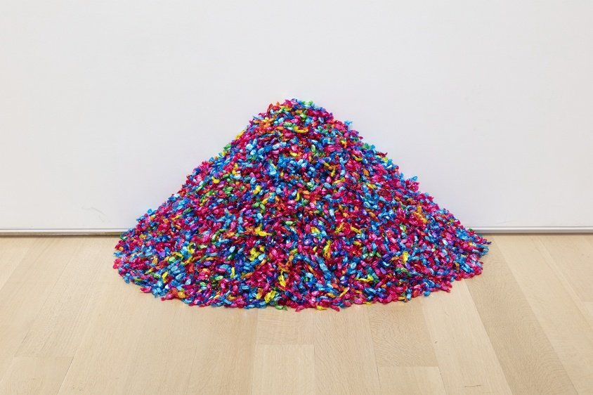

"Untitled" (Portrait of Ross in L.A.)
Felix Gonzalez-Torres · 1991 · Candies in variously colored wrappers, endless supply · Dimensions vary with installation; ideal weight 175 lbs. · Art Institute of Chicago
In copyright. Look and learn: shown for study, not for download.
The work is a supply of wrapped candy with an ideal weight of 175 pounds, and visitors take pieces from it. Its shape and size change with each display. Ross Laycock, the artist's partner, died of complications from AIDS in 1991, the year it was made; Gonzalez-Torres died in 1996. It was first shown at the Luhring Augustine Hetzler Gallery in Los Angeles from October 19 to November 16, 1991. Donna and Howard Stone bought it in 1995 and gave it to the Art Institute of Chicago in 2022.